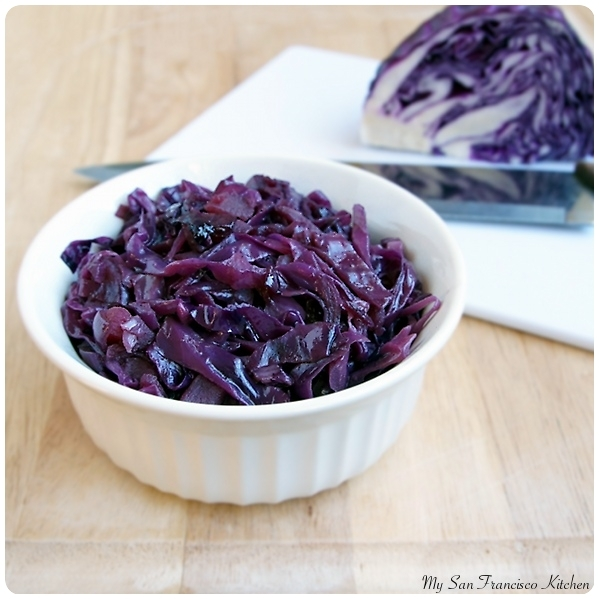

< Home
Rotkohl

Description
A traditional German dish of stewed red cabbage.
Ingredients
- 2 Tablespoons salted butter
- 1 yellow onion, chopped
- 1 large Granny Smith appple, peeled and chopped
- 1 head red cabbage, sliced very thin
- 3 Tablespoons red wine vinegar
- 1 cup apple cider or apple juice
- 1 Tablespoon granulated sugar
- 1 bay leaf
- 2 whole cloves
- 2 juniper berries
- 1/2 teaspoon salt
Steps
- Melt butter in large dutch oven over medium-high heat. Add the chopped onion and apples and saute for 7-10 minutes until soft.
- Add the cabbage to the onions and apples, and cook 5 minutes, stirring frequently.
- Add the red wine vinegar, apple cider, sugar, bay leaf, cloves, juniper berries, and salt. Bring the liquids to a boil, then cover and reduce heat to a simmer.
- Simmer for 1 hour until cabbage is soft but not mushy. Serve warm or cold.
Disclaimer: this is not my recipe, I just made this page for practice. Recipe is from houseofnasheats.com, and image is from mysanfranciscokitchen.com.